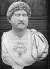

Simon Bar Kokhba 132 yılında Roma İmparatorluğu’na isyan eden bir Yahudi kumandandır. Romalılar Judaea’yı yeniden fethedene kadar üç yıl hüküm sürmüştür. 1800 yıl sonra İsrail kurulana kadar eşi benzeri görülmeyecek olan son Yahudi devletinin lideri olmuştur.

Bar Kokhba’nın isyanının bastırılmasından sonra, İmparator Hadrian (76-138) Yahudiliği ortadan kaldırmak amacıyla kanunlar çıkartarak ondan intikamını almıştır. Bu kapsamda Yahudilerin ülkelerinden çıkarılmasını emretmiş ve bu olay Yahudi diasporasının oluşmasında çok önemli bir rol oynamıştır.
Bar Kokhba’nın isyandan önceki hayatı hakkında pek az şey bilinmektedir. İsrail’in antik çağdaki kralı Davud’un soyundan geldiği söylenmektedir. Bu kan bağı nedeniyle, Bar Kokhba kimi Yahudiler tarafından Mesih olarak kabul edilmiştir.
İsyan Hadrian’ın geleneksel Yahudi adetlerini yasaklamaya kalkması üzerine başlamıştır. Hadrian barbarca bulduğu bebek sünnetini yasaklamak istemiştir. Kudüs Tapınağı’nın kalıntıları arasında bir Pagan tapınağı inşa etmek istemesi de Yahudiler arasında büyük bir infiale yol açmıştır.
Bar Kokhba’nın ayaklanmasına dört yüz bin asker katılmıştır. Asiler yüzlerce kasabanın kontrolünü ele geçirmişlerdir. Romalılar’ı kalelerinden çıkarmış, Yahudi kanunlarının uygulanmasını sağlamışlar ve kendi paralarını basmışlardır. Yaklaşık üç yıla yakın bir süre boyunca, Hadrian yeni bir ordu yollayana kadar Judaea fiilen bağımsız kalmıştır.
İsyanın bastırılması için toplam on iki Roma lejyonu gönderilmiştir. Bu, Roma Barışı olarak bilinen Pax-Romana döneminin en kanlı savaşlarından biri olmuştur. Asiler son olarak Kudüs yakınlarındaki Bethar’da ayaklanmışlarsa da 135 yılında Romalılar şehre girince Bar Kokhba ve takipçileri öldürülmüşlerdir. Savaşın ardından çok sayıda Yahudi katledilmiş, yerinden edilmiş ve köle olarak satılmıştır. Yahudilerin eski başkentleri olan Kudüs’e tekrar dönmeleri yüzyıllar alacaktır.
Ek Bilgiler
1- Bar Kokhba’nın ordusuna yeni üye yaptığı askerlerin, bir parmağını kestiği söylenmektedir.
2- İsyandan sonra Roma otoriteleri Kudüs’ün büyük bölümünü yok ettiler. Kısa süre içinde şehrin adını da “Aelia Capitolina” olarak değiştirdiler. Hadrian Judaea eyaletinin de adını “Syria Palaestina” olarak değiştirdi. Günümüzde kullanılan “Filistin” kelimesi “Palaestina” sözcüğünden türemiştir.
3- 20.yy’da faaliyet gösteren ve Siyonist gençlerden oluşan grup Betar, adını Bar Kokhba’nın isyan ettiği son bölgeden almaktadır.